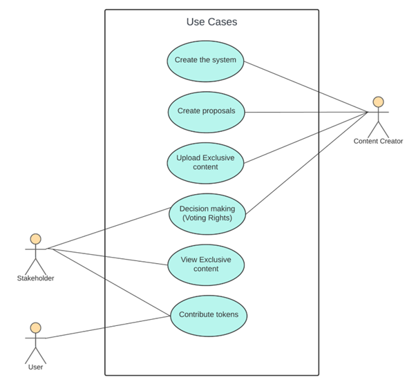

Case Study
A blockchain-based ecosystem empowering content creators through tokenized engagement, analytics-driven recommendations, and decentralized governance.
Overview
This project explored how blockchain and big data analytics can empower digital content creators by offering tokenized engagement, recommendation systems, and micro-economy models. The system was designed to enhance creator visibility, strengthen community engagement, and introduce a transparent, decentralized ecosystem.
Problem Statement
- Existing platforms like YouTube fail to give creators direct ownership of their engagement data.
- Recommendation systems often ignore Shorts, resulting in incomplete analytics.
- Smart contracts used for tokenization lack proper rule integrity.
- Fluctuating token value makes monetization unstable for creators.
Proposed Solution
- Integrates comprehensive YouTube data (Shorts + long-form videos).
- Big data clustering & classification to recommend creators based on engagement.
- DAO-based governance for fair, transparent system operations.
- Tokenization system allowing users to buy creator tokens for exclusive content and communities.
System Design
The system consists of multiple layers ensuring seamless functionality:
- User Layer: Fans purchase tokens to unlock access to creators’ content.
- Analytics Layer: Processes video data including views, likes, comments, and Shorts.
- Recommendation Engine: Categorizes creators based on engagement levels.
- Blockchain Layer: Smart contracts manage transactions, token distribution, and DAO governance.
Block Diagram
Activity Diagram
Use Case Diagram
Demo Video
Outcome & Learnings
- Successfully built a prototype demonstrating decentralized creator economies.
- Gained strong experience in blockchain development and scalable recommendation systems.
- Future improvements can address token stability and rule integrity challenges for production deployment.
Tech Stack
Ethereum, Solidity, Truffle Suite, React.js, Big Data Analytics, DAO-based Governance